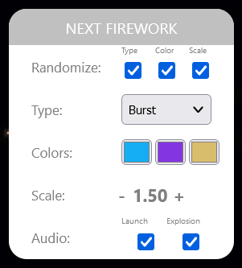

Welcome to the documentation for my Three.js based firework site. This site was built to enable people to create fun, colorful, and explosive firework displays and easily share them. The purpose of this documentation page is to provide context for the site and describe how the tools can be used to create and share your own firework shows.
This site was created using Javascript with Three.js. If you're interested in looking at or experimenting with the code, it's available here. A couple years ago, I made a Houdini tool for creating fireworks with mouse clicks, and I built this site because I wanted to enable people to do the same thing in a real time interactive setting on the web. I found Three.js was extremely flexible for procedurally creating the geometry for the fireworks and I was able to build a timeline-based editing system around that relatively quickly.
[VIDEO] When you first visit the website, you'll see a starry night sky and a handful of menus. Click anywhere in the night sky to launch a firework! The firework will rocket toward the point you clicked and explode when it reaches it. In this mode, the fireworks won't be recorded - this is just a testing ground to launch as many fireworks as you'd like and play with the settings.
If when you load the site you instead see a big play button, that means you loaded a URL that already contains a firework show! Press play to watch the show, and press the button in the upper left at any time to share or edit the show. Here's an example I created! [VIDEO]
Toggling the UI
[VIDEO] The button in the upper left can be pressed at any time to hide / show the various interface elements on the site.
The Main Menu
The menu in the upper left, or the Main Menu, has a handful of basic functions. The first, "Share this show" copies the current URL to the clipboard. This is how you can share a custom firework show with someone, or save a show you've created for later.
"Playback mode" will switch the site from edit to playback mode, where you can view a recorded show without distractions. In playback mode, this button will be labeled "Edit mode" and return to edit mode.
The third option, labeled "Documentation" will take you to this page, and the fourth option, "About me," will take you to my portfolio site, which was also created using Three.js.
Editor Settings
The Editor Settings menu has just two options, "Record Mode" and "Night Sky." The record mode option enables recording; if you toggle on record mode, you'll see the editing tools appear. Using record mode is how you can create a custom firework show and share it or save it for later.
The other setting, "Night Sky," toggles the background stars on and off.
Next Firework
In the Next Firework menu, you'll find all the parameters that will be applied to the next firework you create. This includes randomization options, explosion type, colors, explosion scale, and audio. If a randomization option is enabled, that parameter will be randomized next time a firework is created.
The options in the Next Firework will be applied to fireworks that are recorded as well as fireworks that aren't recorded, so feel free to test out the parameters in this menu to visualize the different options with record mode toggled off.
The Timeline
The timeline includes all the tools you need for previewing and creating a firework show. On the far left is the length of the timeline, which can be lengthened to a maximum of one minute. Adjacent to the length controls, the play / pause button will play or pause playback, the next button will jump to the next firework on the timeline, and the fast forward button will skip to the end. Scrub through time by pressing and dragging anywhere on the timeline. On the right-hand side, there are buttons to reverse playback, jump to the previous firework, and skip back to the start. Finally, the loop button will toggle between infinite looping and a single playback.
When a firework is recorded, it will appear on the timeline as a marker (matching the first color of the firework). When dragging the timeline position indicator, it will automatically snap to nearby firework markers on the timeline.
On This Frame
The various parameters of any given firework that explodes on the current frame in the timeline will appear in the "On This Frame" menu. Firework parameters include everything available in the "Next Firework" menu, as well as indicating the firework position coordinates on screen.
Changing anything in an entry will instantly update that firework with the new value. You can also remove fireworks by clicking the trash icon on the upper right of an entry. To delete all the fireworks in a show and start fresh, click the big trash icon in the upper right of the screen.
[VIDEO] After you've had enough of playing with fireworks in the sandbox with recoding disabled, enable recording to start creating a show. Creating a show is as easy as moving the timeline position to the moment you'd like a firework to explode and clicking anywhere in the sky. One easy way to do this is to press play and click around where you'd like. You can also pause and create as many fireworks as you'd like to explode simultaneously.
At any time, you can press the "Hide UI" button in the upper left corner of the screen to hide the menus and place fireworks all over the space more easily.
You can choose the appearance of these fireworks by setting things ahead of time in the "Next Firework" menu or editing them after they've been created by jumping back to the marker on the timeline and making changes in the "On This Frame" menu.
Preview a show at any time by pressing the "Playback mode" button in the main menu.
[VIDEO] Each time you record a firework, the URL of the site is updated with an encoded parameter for that firework. Editing or removing a firework will update its entry in the URL. When you're ready to share a firework show with someone, or if you'd like to save it for later, just copy the current URL of the website or press the "Share this show" button in the main menu.
When a URL containing firework data is loaded, the site will automatically load "Playback Mode" where the show can be enjoyed without the UI getting in the way. The show can be edited from this point just by opening the menu and pressing the "Edit mode" button.
In addition to containing data for all the created fireworks, the site URL will also contain the length of the timeline, whether the timeline should loop forever or just play once, and whether or not the starry background is enabled. However a show is created is exactly how it will appear during playback.
On mobile devices: while the site is fully functional on mobile, it may be difficult to navigate the timeline and other settings. Still, it should be fun to view shows and play with fireworks outside recorded mode. One tip is to hide the UI when creating fireworks so the full screen is available to tap.
On aspect ratios: because of differences in aspect ratios of devices - for example a wide desktop display vs. a narrow mobile screen - a firework display will automatically recalculate the positions of each firework based on the display it was created on. While this is desirable because it means fireworks will never fly off-screen, and shows will never appear stretched or squashed, it does mean that fireworks created on wide, landscape oriented displays will appear quite tightly grouped on narrow displays and may not clearly reflect the original intent of the creator.
Thanks for your interest in this site - I hope you have fun with it and share some amazing firework displays with some people in your life. If you have any questions or comments, I can be reached at noah.gunther@gmail.com. Feel free to check out the source code for this site if you're interested. [IMAGE]
© 2023 Noah Gunther